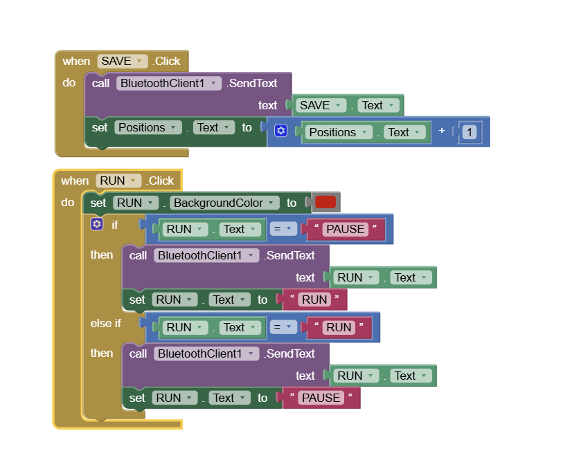

Robotic Arm Controller
This Robotic Arm Controller App is designed to wirelessly control a robotic arm using an Android smartphone and an HC-05 Bluetooth module. Built with MIT App Inventor, the app features sliders to adjust individual servo positions and control speed, along with buttons for saving and running automated movements. The app sends commands via Bluetooth, allowing precise control over each joint. Users can program sequences of movements and execute them automatically, making the robotic arm adaptable for various tasks.
Robotic Arm Controller Via Bluetooth
Code Breakdown
In this guide, we will go through the Arduino code for controlling a robotic arm via Bluetooth. The code is divided into sections for easy understanding. At the end, you’ll find the complete source code.
1.Including Libraries & Defining Components
The first step is to include the necessary libraries and define the hardware components.
Libraries Required
- SoftwareSerial.h – Enables serial communication for the HC-05 Bluetooth module.
- Servo.h – Controls the six servo motors.
Both libraries come pre-installed with the Arduino IDE, so no extra installation is required.
- Create six servo objects for controlling different joints.
- Define pins for HC-05 Bluetooth module.
- Declare variables to store current and previous servo positions.
- Use arrays to store steps for automatic mode.
#include // For Bluetooth communication
#include // For controlling servos
// Define Bluetooth Module RX & TX pins
#define BT_RX 10
#define BT_TX 11
// Initialize Bluetooth serial communication
SoftwareSerial Bluetooth(BT_RX, BT_TX);
// Define servo motors
Servo base, shoulder, elbow, wrist, gripper, extraServo;
// Variables to store positions
int basePos = 90, shoulderPos = 90, elbowPos = 90, wristPos = 90, gripperPos = 90, extraPos = 90;
int prevBase, prevShoulder, prevElbow, prevWrist, prevGripper, prevExtra;
// Arrays for automatic mode
int autoSteps[10][6]; // Stores 10 positions for the 6 servos
int stepIndex = 0;
2. Setup: Initializing Servos & Bluetooth Module
In the setup() function, we initialize:
- Servo motors – Attach them to their respective Arduino pins.
- Bluetooth module – Start serial communication with the HC-05 module.
- Initial arm position – Move the robotic arm to a neutral position using the write() function.
void setup() {
// Attach servos to their respective pins
base.attach(3);
shoulder.attach(5);
elbow.attach(6);
wrist.attach(9);
gripper.attach(10);
extraServo.attach(11);
// Start serial communication with Bluetooth module
Bluetooth.begin(9600);
Serial.begin(9600);
// Set initial positions for all servos (90° - neutral position)
base.write(90);
shoulder.write(90);
elbow.write(90);
wrist.write(90);
gripper.write(90);
extraServo.write(90);
// Allow some time for servos to reach position
delay(500);
}
Why is this important?
- Ensures all servos are correctly assigned to their pins.
- Moves the robotic arm to a neutral position before accepting commands.
- Initializes Bluetooth communication so the robot can receive data from a mobile app or controller.
3. Loop: Receiving Bluetooth Commands & Controlling the Arm
In the loop() function, the robotic arm constantly monitors incoming Bluetooth data from a smartphone or controller. Based on the received data, the servos adjust their positions accordingly.
How It Works:
- Check for incoming data using Bluetooth.available().
- Read the received command using readString().
- Store the command in a variable (dataIn).
- Interpret the command and move the corresponding servo motor.
void loop() {
// Check if data is available from the Bluetooth module
if (Bluetooth.available()) {
String dataIn = Bluetooth.readString(); // Read incoming data as a string
Serial.println("Received: " + dataIn); // Print received data for debugging
// Control the robotic arm based on the received command
if (dataIn == "BASE_LEFT") {
base.write(base.read() - 5); // Rotate base to the left
}
else if (dataIn == "BASE_RIGHT") {
base.write(base.read() + 5); // Rotate base to the right
}
else if (dataIn == "SHOULDER_UP") {
shoulder.write(shoulder.read() + 5);
}
else if (dataIn == "SHOULDER_DOWN") {
shoulder.write(shoulder.read() - 5);
}
else if (dataIn == "ELBOW_UP") {
elbow.write(elbow.read() + 5);
}
else if (dataIn == "ELBOW_DOWN") {
elbow.write(elbow.read() - 5);
}
else if (dataIn == "WRIST_UP") {
wrist.write(wrist.read() + 5);
}
else if (dataIn == "WRIST_DOWN") {
wrist.write(wrist.read() - 5);
}
else if (dataIn == "GRIPPER_OPEN") {
gripper.write(gripper.read() + 10); // Open gripper
}
else if (dataIn == "GRIPPER_CLOSE") {
gripper.write(gripper.read() - 10); // Close gripper
}
}
delay(100); // Small delay to avoid excessive loop execution
}
Why Is This Important?
- Ensures real-time control of the robotic arm via Bluetooth.
- Smooth and incremental movement for precise positioning.
- Prevents excessive movement by limiting changes to small steps.
Understanding the Android App Communication
Now, let’s examine how the Android app communicates with the Arduino. Specifically, we’ll analyze the commands it sends when controlling the robotic arm via Bluetooth.
How the App Sends Data:
- When a button is pressed in the app, it sends a specific text command via Bluetooth.
- The Arduino receives this command and interprets it to move the corresponding servo motor.
- Each button in the app corresponds to a predefined action, such as moving the base, shoulder, elbow, wrist, or gripper.
Visualizing the Communication Flow:
- User presses a button in the Android app.
- The app sends a text command via Bluetooth (e.g., "ELBOW_UP").
- Arduino receives the command and moves the corresponding servo.
- The robotic arm moves accordingly.

The robotic arm control app was developed using MIT App Inventor, a simple yet powerful online tool for creating Android applications. Here's how the app works:
App Layout & Components
1. Bluetooth Connectivity:
At the top of the app interface, there are two buttons designed for Bluetooth connection. These allow the smartphone to pair and communicate with the HC-05 Bluetooth module.
2. Robot Arm Visualization:
On the left side, there is an image of the robotic arm, giving users a visual reference while controlling the servos.
3. Servo Control Sliders:
On the right side, there are six sliders, each responsible for controlling a specific servo of the robotic arm. Moving a slider adjusts the corresponding servo position in real-time.
4. Speed Control Slider:
In addition to servo controls, there is a seventh slider at the bottom, which allows users to adjust the movement speed of the robotic arm.


How the App Works
- The user connects to the HC-05 Bluetooth module using the Bluetooth buttons.
- The user adjusts the sliders, sending position data for each servo to the Arduino.
- The Arduino interprets the commands and moves the servos accordingly.
- The speed control slider modifies the movement speed of the robotic arm.
App Functionality & Controls
The robotic arm control app includes customized sliders and programming buttons to enhance user control and automation.
Slider Configuration
Each slider is uniquely configured with:
- Different initial values – ensuring each servo starts from an optimal position.
- Custom minimum and maximum values – tailored to match the movement range of each joint.
This setup prevents the robotic arm from exceeding its physical limits while ensuring smooth and precise movements.
Automation & Programming Controls
At the bottom of the app, there are three essential buttons:
- SAVE: Stores the current servo positions, allowing users to create a sequence of movements.
- RUN: Executes the saved sequence, enabling the robotic arm to operate automatically.
- RESET: Clears all saved steps, resetting the system for a new motion sequence.
Below these buttons, a label displays the number of saved steps, providing real-time feedback on the programmed sequence.
Bluetooth Connectivity in the App
The first step in controlling the robotic arm is establishing a Bluetooth connection between the smartphone and the HC-05 module.
Connection Setup
On the left side of the MIT App Inventor interface, we have blocks dedicated to:
- Scanning for available Bluetooth devices – The app searches for nearby Bluetooth modules.
- Displaying a list of detected devices – The user can select the HC-05 module from this list.
- Establishing a connection – Once selected, the app initiates a connection to the module.
- Providing connection feedback – A message appears confirming whether the connection was successful.
This setup ensures a seamless pairing process, allowing smooth communication between the app and the robotic arm.
Servo Control via Sliders & Buttons
The MIT App Inventor blocks for controlling the robotic arm include sliders for servo positioning and buttons for automated programming.
Sliders for Servo Control

How It Works:
- Each slider corresponds to a specific servo motor.
- When a slider is moved, the SendText function transmits a command via Bluetooth.
- The command includes: A prefix indicating which servo is being adjusted & The current slider value (position of the servo in degrees).
- The Arduino receives this data and adjusts the corresponding servo.
Processing Incoming Bluetooth Data on Arduino
On the Arduino side, we need to decode the received Bluetooth commands and move the corresponding servo motors accordingly.
Decoding Bluetooth Commands
How It Works:
- The Bluetooth module sends data as text strings (e.g., "s1 90").
- Using the startsWith() function, the Arduino checks the prefix to determine which servo to move.
- Using the substring() function, it extracts the position value from the received data.
- The extracted position value is converted into an integer and used to set the servo angle.
Smooth Servo Motion Control on Arduino
Instead of moving the servos instantly using write(), we implement smooth motion control to prevent jerky movements and mechanical stress on the robot arm.
How It Works:
- Directly calling write(position) moves the servo instantly at maximum speed.
- To control the speed, we use a for loop to gradually move the servo from its previous position to the new position.
- A delay between each step determines the speed of movement.
- By adjusting the delay value, we can control the servo's transition speed.
int stepDelay = 5; // Adjust this value to change the speed
for (int pos = prevPosition; pos <= newPosition; pos++) {
servo1.write(pos);
delay(stepDelay);
}
Key Benefits:
- Prevents sudden jerks and reduces stress on servo motors.
- Improves precision by making smooth transitions between positions.
- Allows dynamic speed control by adjusting the stepDelay value.
Resetting the Robot Arm for New Programming
When the RESET button is pressed, all stored motion data is cleared, and the robot arm is ready for new programming.
How It Works (Based on Your Arduino Code)
- Clears all stored positions by resetting the arrays to zero.
- Resets the index to allow new motion steps to be recorded.
- Moves servos to their default position for a fresh start.
void resetArm() {
// Clear all stored positions
for (int i = 0; i < maxSteps; i++) {
for (int j = 0; j < 6; j++) {
steps[i][j] = 0;
}
}
// Reset index to start fresh
stepIndex = 0;
// Move servos to their initial position
servo1.write(initialPos1);
servo2.write(initialPos2);
servo3.write(initialPos3);
servo4.write(initialPos4);
servo5.write(initialPos5);
servo6.write(initialPos6);
// Send confirmation message via Bluetooth
Bluetooth.println("RESET_DONE");
}
Key Features:
- Instantly clears previous programming for a fresh start.
- Ensures servos return to their initial position.
- Bluetooth confirmation message indicates reset completion.
Overall Code
#include // For Bluetooth communication
#include // For controlling servos
// Define Bluetooth Module RX & TX pins
#define BT_RX 10
#define BT_TX 11
// Initialize Bluetooth serial communication
SoftwareSerial Bluetooth(BT_RX, BT_TX);
// Define servo motors
Servo base, shoulder, elbow, wrist, gripper, extraServo;
// Variables to store positions
int basePos = 90, shoulderPos = 90, elbowPos = 90, wristPos = 90, gripperPos = 90, extraPos = 90;
int prevBase, prevShoulder, prevElbow, prevWrist, prevGripper, prevExtra;
// Arrays for automatic mode
int autoSteps[10][6]; // Stores 10 positions for the 6 servos
int stepIndex = 0;
bool runMode = false; // Flag for running stored movements
int speedDelay = 10; // Delay time for smooth movement
void setup() {
Bluetooth.begin(9600); // Start Bluetooth communication
base.attach(3);
shoulder.attach(5);
elbow.attach(6);
wrist.attach(9);
gripper.attach(10);
extraServo.attach(11);
Serial.begin(9600);
Serial.println("Robotic Arm Ready...");
}
void loop() {
if (Bluetooth.available()) { // Check if data is received
String dataIn = Bluetooth.readString(); // Read incoming data
// Identify servo control command
if (dataIn.startsWith("s1")) {
basePos = dataIn.substring(2).toInt();
moveServoGradually(base, prevBase, basePos);
}
else if (dataIn.startsWith("s2")) {
shoulderPos = dataIn.substring(2).toInt();
moveServoGradually(shoulder, prevShoulder, shoulderPos);
}
else if (dataIn.startsWith("s3")) {
elbowPos = dataIn.substring(2).toInt();
moveServoGradually(elbow, prevElbow, elbowPos);
}
else if (dataIn.startsWith("s4")) {
wristPos = dataIn.substring(2).toInt();
moveServoGradually(wrist, prevWrist, wristPos);
}
else if (dataIn.startsWith("s5")) {
gripperPos = dataIn.substring(2).toInt();
moveServoGradually(gripper, prevGripper, gripperPos);
}
else if (dataIn.startsWith("s6")) {
extraPos = dataIn.substring(2).toInt();
moveServoGradually(extraServo, prevExtra, extraPos);
}
else if (dataIn.startsWith("SAVE")) { // Save current position
savePosition();
}
else if (dataIn.startsWith("RUN")) { // Start auto mode
runMode = true;
runServoSequence();
}
else if (dataIn.startsWith("RESET")) { // Reset positions
resetPositions();
}
else if (dataIn.startsWith("SPD")) { // Adjust speed
speedDelay = dataIn.substring(3).toInt();
}
}
}
// Gradual movement function
void moveServoGradually(Servo servo, int &prevPos, int targetPos) {
if (prevPos != targetPos) {
int step = (prevPos < targetPos) ? 1 : -1;
for (int pos = prevPos; pos != targetPos; pos += step) {
servo.write(pos);
delay(speedDelay);
}
servo.write(targetPos);
prevPos = targetPos;
}
}
// Save the current position into array
void savePosition() {
if (stepIndex < 10) {
autoSteps[stepIndex][0] = basePos;
autoSteps[stepIndex][1] = shoulderPos;
autoSteps[stepIndex][2] = elbowPos;
autoSteps[stepIndex][3] = wristPos;
autoSteps[stepIndex][4] = gripperPos;
autoSteps[stepIndex][5] = extraPos;
stepIndex++;
Serial.println("Position Saved");
} else {
Serial.println("Memory Full!");
}
}
// Run the saved sequence
void runServoSequence() {
while (runMode) {
for (int i = 0; i < stepIndex; i++) {
moveServoGradually(base, prevBase, autoSteps[i][0]);
moveServoGradually(shoulder, prevShoulder, autoSteps[i][1]);
moveServoGradually(elbow, prevElbow, autoSteps[i][2]);
moveServoGradually(wrist, prevWrist, autoSteps[i][3]);
moveServoGradually(gripper, prevGripper, autoSteps[i][4]);
moveServoGradually(extraServo, prevExtra, autoSteps[i][5]);
// Check for new commands while running
if (Bluetooth.available()) {
String dataIn = Bluetooth.readString();
if (dataIn.startsWith("PAUSE")) {
runMode = false;
}
else if (dataIn.startsWith("SPD")) {
speedDelay = dataIn.substring(3).toInt();
}
}
}
}
}
// Reset all stored positions
void resetPositions() {
for (int i = 0; i < 10; i++) {
for (int j = 0; j < 6; j++) {
autoSteps[i][j] = 0;
}
}
stepIndex = 0;
runMode = false;
Serial.println("Positions Reset");
}